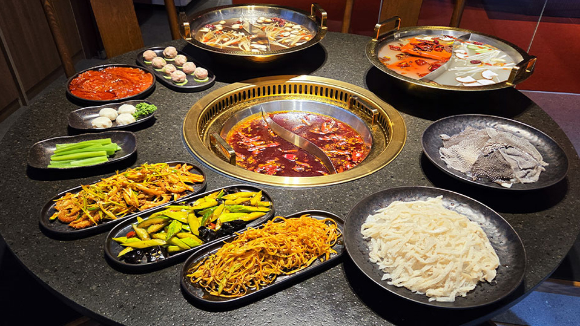

오늘은 마라? 아니면 버섯?
라오충칭훠궈의 인기 국물 투톱은 마라탕과 버섯탕입니다. 한쪽은 짜릿한 자극과 중독성, 다른 한쪽은 깊고 부드러운 감칠맛으로 편안함을 줍니다. 그렇다면 손님들은 어떤 기준으로 이 둘을 선택할까요?
선택 패턴 속 숨은 재미
- 도전가형 — “오늘은 땀 한 번!” 마라탕 선택. 짜릿함과 도파민을 즐김.
- 힐링형 — “속 편하게 먹고 싶다” 버섯탕 선택. 온화한 깊이를 선호.
- 하이브리드형 — 반반 냄비 주문. “인생은 균형”을 실천.
58%
마라탕 선택
42%
버섯탕 선택
24%
반반 냄비
시간대와 계절에 따른 차이
- 점심 — 업무 중 기운 UP: 마라탕 비율↑
- 저녁 — 하루 마무리 힐링: 버섯탕 비율↑
- 여름 — 개운한 땀과 해방감: 마라탕 선택↑
- 겨울 — 따뜻한 온기와 안정감: 버섯탕 선택↑
메뉴 선택에서 배우는 인사이트
데이터는 단순히 ‘마라가 인기’로 끝나지 않습니다. 시즌·시간대별 메인 노출을 조정하면 고객 만족도가 높아지고, “매운맛과 부드러운 맛 모두에서 최고의 경험 제공”이라는 브랜드 메시지를 강화할 수 있습니다.